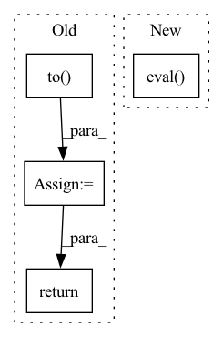

Pattern ID :13072
Before Change
Tensor: Output tensor (T ** prod(upsample_scales), out_channels).
if not isinstance(c, torch.Tensor):
c = torch.tensor(c, dtype=torch.float).to( next(self.parameters()).device)
c = self.melgan(c.transpose(1, 0).unsqueeze(0))
if self.pqmf is not None:
c = self.pqmf.synthesis(c)
return c.squeeze(0).transpose(1, 0)
class MelGANDiscriminator(torch.nn.Module):After Change
Perform inference.
self.melgan.eval()
return self.melgan(melspec)
In pattern: SUPERPATTERN
Frequency: 3
Non-data size: 4
Instances Fragment ID: 44072961
Project Name: digitalphonetics/ims-toucan
Commit Name: b43437ffd52b1d82638a75e3648c752f2492652c
Time: 2021-02-19
Author: florian.lux@ims.uni-stuttgart.de
File Name: MelGAN/MelGANGenerator.py
M Class Name: MelGANGenerator
N Class Name: MelGANGenerator
M Method Name: inference(2)
N Method Name: inference(2)
M Parent Class: torch.nn.Module
N Parent Class: torch.nn.Module
M File Name: MelGAN/MelGANGenerator.py
N File Name: MelGAN/MelGANGenerator.py
M Start Line: 165
M End Line: 170
N Start Line: 158
N End Line: 159
Before Change
// Using UNet
// For most of the Active Learning techniques, this model is the same one we used for inference
model = UNet(
dimensions=3,
in_channels=1,
out_channels=2,
channels=(16, 32, 64, 128, 256),
strides=(2, 2, 2, 2),
num_res_units=2,
norm=Norm.BATCH,
dropout=0.2).to( self.device)
model.load_state_dict(torch.load(self.bestModelPath))
model.eval()
return model
def __call__(self, images):
After Change
network = torch.jit.load(self.path)
network = network.to(device) if device else network
network.eval()
return network
def __call__(self, request, datastore: Datastore):
if request.get("strategy") != "tta": Fragment ID: 44072964
Project Name: project-monai/monailabel
Commit Name: 287d4c1eafd3ab1e364e89a4bf9f6e650c68ac77
Time: 2021-04-29
Author: salle@nvidia.com
File Name: sample-apps/segmentation_heart/lib/activelearning.py
M Class Name: MyActiveLearning
N Class Name: MyActiveLearning
M Method Name: get_model(2)
N Method Name: get_model(1)
M Parent Class: ActiveLearning
N Parent Class:
M File Name: sample-apps/segmentation_heart/lib/activelearning.py
N File Name: sample-apps/segmentation_heart/lib/activelearning.py
M Start Line: 40
M End Line: 53
N Start Line: 63
N End Line: 75
Before Change
modified_encoder_path=encoder_path,
encoder_kwargs={"hi": 1},
lr_schedule=None)
network = Network(policy).to( device)
network.eval()
return network
@interp_ex.mainAfter Change
encoder_kwargs={},
algo="bc",
lr_schedule=None)
policy.eval()
return policy
@interp_ex.main Fragment ID: 44072965
Project Name: humancompatibleai/eirli
Commit Name: 35ede8b45ab494bec31c047c9f5fd24c01ba1b52
Time: 2021-09-27
Author: cyn0531@hku.hk
File Name: src/il_representations/scripts/interpret.py
M Class Name: AnonimousClass
N Class Name: AnonimousClass
M Method Name: prepare_network(2)
N Method Name: prepare_network(4)
M Parent Class:
N Parent Class:
M File Name: src/il_representations/scripts/interpret.py
N File Name: src/il_representations/scripts/interpret.py
M Start Line: 149
M End Line: 161
N Start Line: 150
N End Line: 162